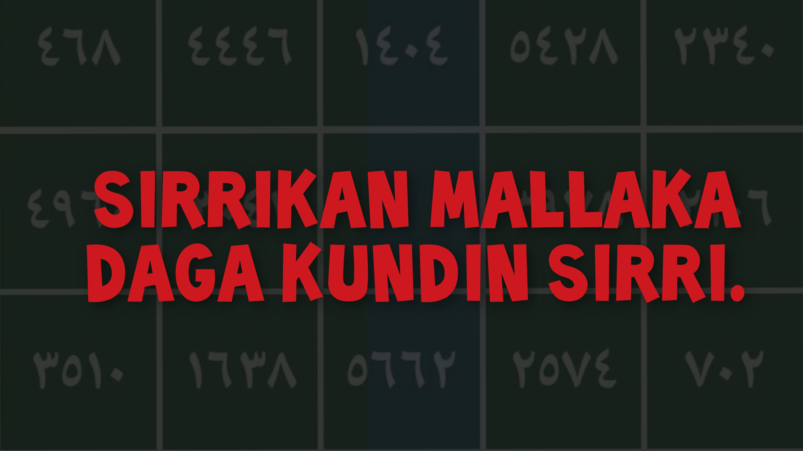
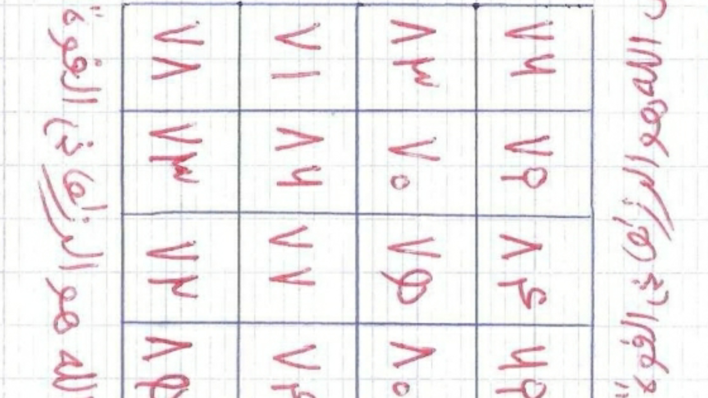

Kogin Sirri
Home
Web
About Us

Da sunan Allah Mai Rahama Mai Jin Qai, Tsira da Salati su tabbata ga fiyayyen halitta annabiMuhammad S.A.W Da iyalan Gidanshi da sauran bayin Allah salihai muminai kuma waliyai irinsu maulan mu
Sheikh Ahmadu Tijjani RTA [0]Da kuma Maulanmu Muradin mu
Sheikh Ibrahim Inyass RTA [1] Allah Ya kara yarda dasu Ameen
Wannan sirrin da zan Baku Yanzu Yana daya daga cikin manya manyan sirrukan mallaka da manyan malaman mu ke boye muku su basa futarwa saboda wasu dalilai Alhandulillah gashi yau zan baku shi kyauta Insha Allahu Sannan Ina rokon ku da kudanna wannan links din domin hakan ne zai bamu kwarin gwiwar kawo muku asararu a koda yaushe.
Da farko ana samun tufafi mai tsarki sai kuma wuri mai tsarki wanda babu hayaniyar mutane dayawa son samu ayi aikin da dare ranar Juma'a, bayan mutum ya cika wadan nan sharudan sai ya zauna ya fuskanci Alqiblah ya mai da hankalinshi waje daya, sai ya soma da wurin
Amma duk bayan kafa 1000, Za'a karanta Ya Wadudukafa 400, sai kace ko kice (Ya Allah, ka mallakamun wane, ya zama baiji kuma bai gani a kaina komai zaiyi sai da yarda ta ya soni tamkar yadda uwa takeson danta) sai kaci gaba da wuridinka, har ka gama
Wannan aikin ana yinshi ne na tsawon kwana 7 babu yankewa in bakayi koda na kwana daya bane to aiki ya dawo baya sai ka sake aikin daga farko, saboda haka ayi kokarin idan aka fara a kammalashi domin samun natijar aikin

Dafa'i don kariya, Tsari da Kuma Karfin ijaba.
Mallaka da ake amfani da suratu yasin.
Wannan Sirri ne mai karfi, Tsari da Kuma Karfin ijaba.
Mallaka da ake amfani da suratu yasin.
sirrin mallaka mai sauki
sirrin mallaka me zafi
sirrin mallaka maliki yaumiddin
sirrin mallaka ya wadudu
sirrin wuridin mallaka
sirrin tabbat yada mallaka
sirrin tabbat yada na mallaka
sirrin mallaka da tabbat yada
sirrin mallaka da tsamiya
sirrin mallaka na tabbat yada
sirrin mallaka mai tsanani
sirrin turaren mallaka
sirrin mallaka tumfafiya
sirrin suratul yusuf don mallaka
sirrin suratul yasin na mallaka
sirrin mallaka da suratul yasin
sirrin mallaka sadidan
sirrin mallaka saurayi
sirrikan mallaka
sirrin mallaka na rubutu
sirrin ya wadudu na mallaka
sirrin bismillah na mallaka
sirrin yasin na mallaka
sirrin mallaka na ya wadudu
sirrin mallaka nan take
sirrin mallaka na yankan shakku
sirrin mallaka na yasin
sirrin mallaka na maliki yaumiddin
sirrin mallaka sha yanzu magani yanzu
sirrin maganin mallaka
sirrin bakin mallaka maiduguri
sirrin mallaka mai
sirrin mallaka mai rikitarwa
sirrin mallaka mujarrabun